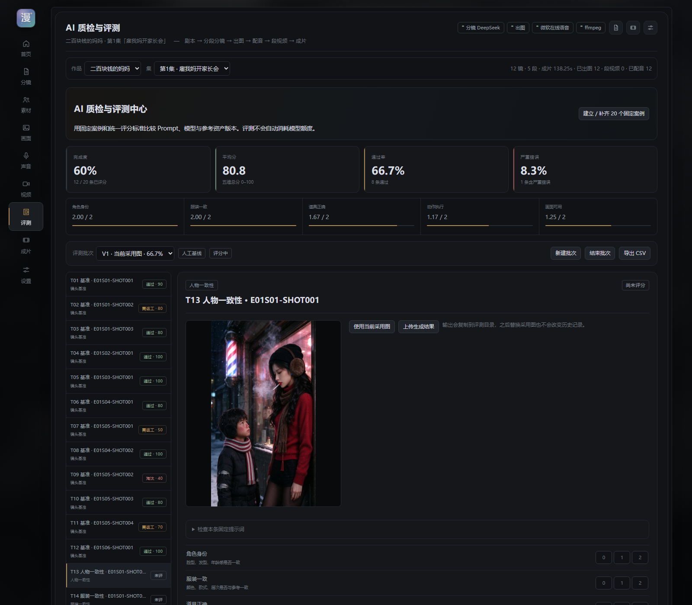

角色 ID、服装版本和参考图逐镜绑定，使身份、发型和服装保持成为这套测试中的最强项。
AI QUALITY & EVALUATION · 2026
把“生成得好不好”
变成可验证的产品指标
固定测试案例、统一 Prompt 版本、五维人工评分和严重错误分类，让 AI 画面质量可以被比较、归因和回归验证。
首轮评分进度12 / 2012 个基准镜头已完成
平均分80.8五维总分 0–100
通过率66.7%8 条达到通过标准
严重错误率8.3%1 条人物关系错误
01 · THE PROBLEM
只展示一张成功图片，无法证明 AI 产品可靠
生成式产品的难点不在于偶尔做出好结果，而在于能否识别失败、解释失败，并在修改 Prompt 或素材后确认没有让其他指标退化。

02 · TEST SET
同一套案例，比较每一次修改
测试集与镜头和提示词绑定，输出图会复制到评测目录。之后重出图、替换参考素材，也不会改变历史批次。
- 12 个镜头基准：还原真实生产镜头
- 8 个对抗挑战：人物、服装、道具、关系、动作、场景和画面洁净
- 每批记录渠道、模型、Prompt、耗时与成本
角色身份2.00
服装一致2.00
道具正确1.67
动作执行1.17
画面可用1.25
03 · WHAT THE DATA SAYS
真正拖低通过率的，不是人物身份
首轮 12 个基准镜头的身份和服装均分都达到 2.00，明显短板集中在动作执行和最终画面可用率。
均分 1.17，说明模型能生成正确人物，但不一定准确完成 Start State 到 End State 的动作变化。
均分 1.25，代表构图、手部和明显瑕疵仍会造成返工；另有 1 条人物关系错误。
数据边界：当前完成的是 12 个基准镜头；8 个对抗挑战尚未评分，因此这些结果只能用于首轮方向判断，不能称为完整模型基准。
04 · NEXT EXPERIMENT
下一批不凭感觉改，用同一测试集验证
评测目的不是证明 AI 已经完美，而是建立一条可重复的产品迭代机制：先发现失败类型，再提出假设，修改 Prompt、参考资产或模型，最后用同一组测试确认效果是否真的提升。